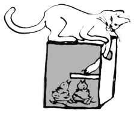

Stav budky říká správci oblasti, jestli se k ní musí vrátit s nářadím. Vyber, v jakém stavu ji necháváš: když drobnost spravíš na místě, je „v pořádku“, a co je spravené, napiš do poznámky.
Pevně drží na stromě, nezatéká do ní, otvor má původní velikost a obrtlík drží budku zavřenou. Škvíry a oprýskaný nátěr ptákům nevadí.
Dá se spravit, jen ne teď:

Uvnitř pod otvorem bývá přišroubovaná malá destička, asi 2 × 7 cm. Brání kočce nebo kuně dosáhnout tlapou na dno k mláďatům. Když chybí a budka visí u města nebo zahrad, kde jsou kočky, zmiň to v poznámce.
Oprava se nevyplatí: shnilé dno, rozpadající se stěny, prohnilé dřevo. Podle Metodiky ČSOP č. 20 vydrží dřevěná budka z 2 cm prken zhruba 8 let, z 2,5 cm kolem 15 let, dřevocementová několikrát déle.
Budka nesmí zůstat ve stavu, kdy by byla pro ptáky nebezpečná, třeba když hrozí, že spadne, rozpadá se nebo z ní trčí hřebíky. Pak ji raději sundej a vezmi s sebou, vyvěsí se znovu po opravě. Správci se zobrazí jako sundaná na opravu.
Poškození vyfoť, správce pak ví, co s sebou vzít.